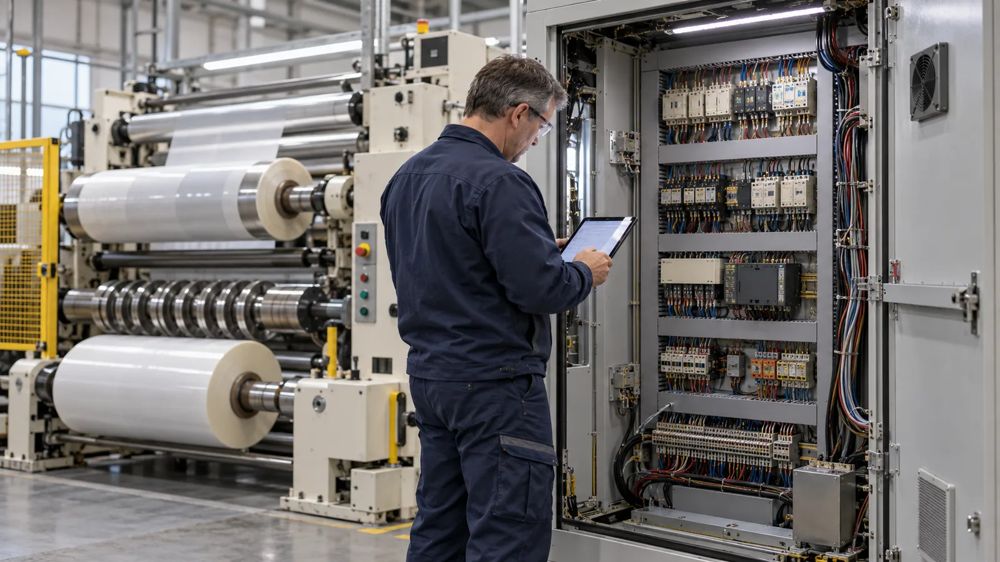
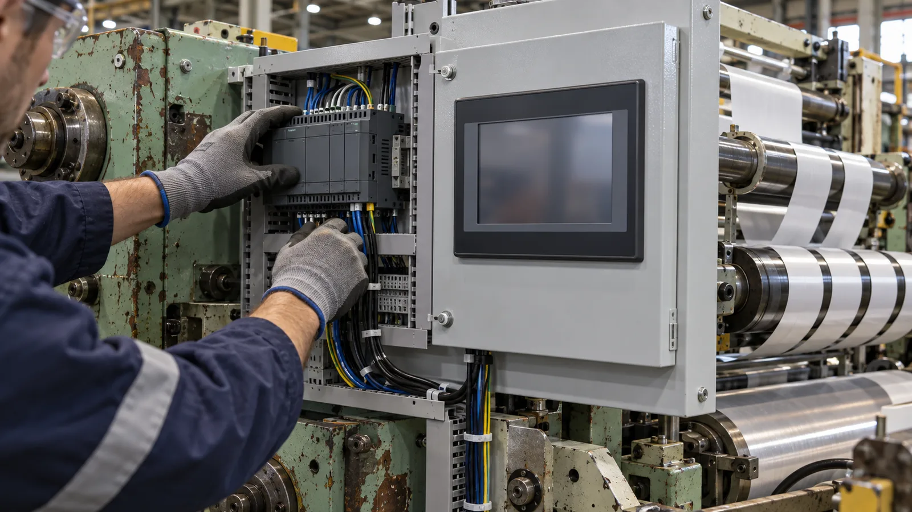

Published September 27, 2026 | By HDPTH Technical Editorial Team

A twenty-year-old slitter rewinder presents buyers with a familiar dilemma. The frame is fine, the product is fine, but the control cabinet holds a drive platform the manufacturer no longer supports, and maintenance spend is drifting upward. Retrofit quotes look cheap next to a new machine; new machines promise capabilities the old frame never had. The right answer depends on where the machine actually limits the business — a question a disciplined buyer can answer before talking price.
When a retrofit makes sense
Retrofit pays when the mechanical asset is healthy and the deficiency is concentrated in electronics and functions that bolt on:
- Obsolete or unsupported control platforms where spare drives and PLC modules are scarce and failure carries weeks of downtime risk.
- Tension and winding accuracy that modern drives, load cells and closed-loop control can dramatically improve on an otherwise sound frame.
- Data integration — a new PLC and HMI opens the door to recipe management, OEE logging and MES connectivity on machines built before those existed.
- Safety device upgrades — new e-stops, guard interlocks and light curtains bring measurable risk reduction even if the machine is not rebuilt to today’s full standard.
- Production continuity — the retrofit usually happens on-site, avoiding foundation work, utilities changes and the long lead time of a new machine.
The precondition is a mechanical bill of health: straight frame, good roll geometry, acceptable bearing and gearbox condition, and a web path that already suits the product. Without that survey, retrofit pricing is guesswork.
What a retrofit cannot fix
New controls run the machine you have — they do not change what the machine is. Rollers that are worn or bent keep their runout. Gear backlash keeps its signature in every speed change. Machine width, maximum speed and roll path geometry stay exactly as built. Guarding philosophy dates the machine even after new interlocks are fitted. And if the product plan calls for materials, widths or speeds the frame was never designed for, the retrofit budget is better rolled into a new purchase. A useful test: list the three performance gaps that hurt most, then ask which of them a new control cabinet could influence. If the honest answer is none, stop evaluating.
Cost and downtime, compared honestly
As a planning figure, a controls retrofit — new drives, PLC, HMI, safety circuit, rewiring of the power and control sections — typically lands between 15 and 35 percent of a comparable new machine’s price, before installation downtime and engineering extras. The spread is wide because scope varies. The comparison should include factors buyers routinely miss:
- Discovery risk — retrofit projects on undocumented machines routinely uncover rewiring surprises; fix a contingency of 20 percent or more.
- Documentation deliverable — insist the retrofit ends with as-built schematics matching the machine; without them the next upgrade starts from zero again.
- Conformity status — a materially modified machine may need re-assessment against destination-market requirements.
- Remaining life — a retrofit that adds five reliable years costs a fifth of a new machine and delivers a fraction of the life. Amortize accordingly.
- Downtime profile — retrofit downtime is concentrated and on-site; new-machine downtime is scheduled around an installation window.
| Factor | Controls retrofit | New machine |
|---|---|---|
| Typical investment | 15–35% of new-machine price, plus contingency | Full machine price plus installation and logistics |
| Speed / width / material limits | Unchanged — mechanical envelope stays | Designed to current and future product plans |
| Safety and conformity | Partial upgrade; full compliance often unreachable | Built to current machinery regulation with full file |
| Automation and data | Adds PLC/HMI/data layers to old mechanics | Native integration, automatic systems, MES-ready |
| Best when | Frame sound, pain is electronic, product plan unchanged | Capacity, width, material or compliance must change |

Hidden risks, and how to contract them away
Three risks dominate failed retrofits. First, documentation: machines without original schematics turn every wire into an investigation, so require a pre-retrofit survey and a fixed as-built documentation package in the contract. Second, obsolescence traps: insist on a current, supported drive and PLC platform with stated spare-parts availability, not whatever the integrator has on the shelf. Third, acceptance: define a written acceptance test — speed, tension accuracy, stop function, safety device checks — mirroring the discipline of a factory acceptance test. Buyers who contract these three items convert retrofit from gamble to project.
When buying new clearly wins
New machines win whenever the business case reaches beyond restoring today’s performance: higher line speed, a different width, new materials such as elastic or filter media, automation like automatic blade changing or turret winding, energy efficiency targets, or compliance with the current EU machinery regulation. A new machine also brings the complete package retrofit never can: genuine conformity documentation, warranty, structured spares support and operator training — items our guides on warranty and spare parts and operator training cover in detail. If the retrofit quote plus discovered mechanical work plus the value of capabilities still missing approaches sixty percent of a new machine, the new machine usually wins on risk alone.
Deciding between retrofit and replacement?
Send HDPTH your current machine’s age, widths, speeds and the gaps that hurt most. We will give an honest view on what a new slitter rewinder would change for your product plan, so you can compare it against any retrofit quote.
Submit Your Project InquiryFrequently asked questions
When is a slitter rewinder retrofit worth doing instead of buying new?
A retrofit is worth considering when the mechanical core is sound — frame, rollers, bearings, unwind and rewind shafts — and the pain is concentrated in controls, drives, HMI, safety devices or one function such as tension accuracy or knife setting. If the frame is straight, roll geometry is good, and the product width and speed targets already suit the machine, replacing drives, PLC, HMI and safety circuits can add years of life for a fraction of new-machine cost and without a facility rebuild.
What can a retrofit not fix on an older slitter rewinder?
A retrofit cannot restore worn or bent rollers, oversized bearing clearances, a twisted frame, worn gearboxes or a mechanical layout that caps web speed. It cannot change the fundamental roll path, machine width or maximum speed, and it rarely brings an old machine fully to current guarding and safety standards — new e-stops and light curtains help, but the underlying guarding philosophy may date the machine. If the limitation is mechanical or dimensional, new controls only make the old limits run more smoothly.
How do the costs of retrofit and new machine compare?
A controls retrofit typically lands in the range of 15 to 35 percent of a comparable new machine’s price, plus installation downtime and engineering. That advantage shrinks when the retrofit reveals mechanical work — roller regrinding, gearbox replacement, guarding upgrades — or when obsolete parts force bespoke engineering. Buyers should compare total landed cost including installation, commissioning, documentation, training and expected remaining life, not just the invoice, and get the retrofit scoped by a supplier who has inspected the machine.
What are the hidden risks of retrofitting an older machine?
Documentation is the biggest one: without original schematics, wiring becomes reverse-engineered work with time and cost uncertainty. Obsolete drive and PLC platforms can trap buyers into unsupported generations. The electrical system may not meet current destination-market standards, and the machine’s conformity file cannot be recreated for a changed machine. Mitigate with a pre-retrofit survey, a fixed documentation deliverable, a supported control platform, and a written acceptance test with speed and tension targets.
When does buying a new slitter rewinder clearly win?
When the business case involves more than restoring current performance: higher speed, wider or narrower web, new materials, automation such as automatic knife positioning or turret winding, data integration with MES, energy efficiency, or compliance with current machinery safety regulation. New machines arrive with complete documentation, warranty, spare-parts support and a genuine conformity route, and the floor space, foundation and utility interfaces are designed around the machine rather than compromised around it.
Sources
- Control Engineering: industrial control system modernization and migration practice
- Plant Engineering: asset management and upgrade decision frameworks
- European Commission: CE marking and machinery conformity requirements
- ISO 12100: risk assessment and risk reduction for machinery
- TAPPI: converting equipment operation and maintenance technical resources